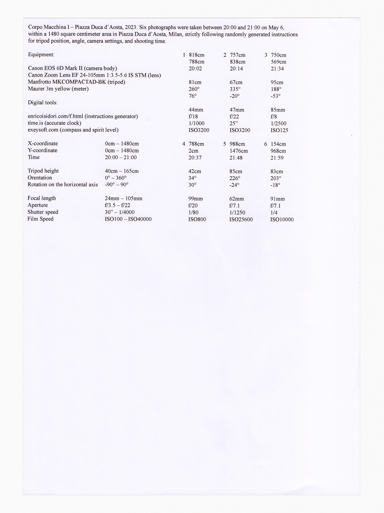
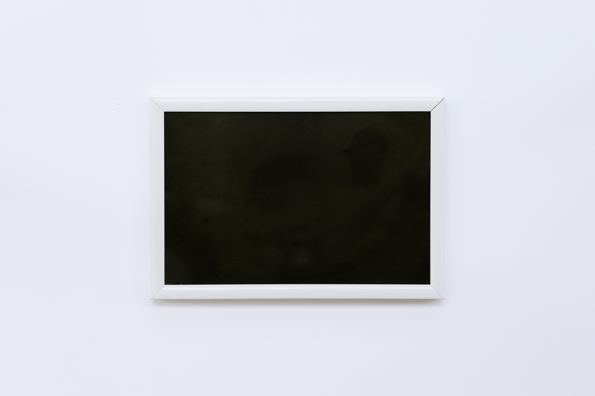

"Corpo (Body) Macchina (Camera/Machine)" consists of two works: one includes three photos taken across the entire Milan area, while the other consists of six photos within a defined square perimeter. The photographs were taken precisely at random, with coordinates, time, height, orientation, rotations, and camera settings all randomly generated. Once the data was produced, I went to the corresponding location, positioned the tripod according to the specified height, orientation, and rotations, set the aperture, shutter speed, and ISO as specified, and shot at the assigned time. I became a passive operator of the camera, who becomes a photographer, author, body. Following the instructions, I became a machine. The photo’s metadata was generated before the shot was taken. It was not the aesthetic intention that dictated the data the machine produced, but was the data that the machine produced that dictated the aesthetic will.
Links
f.html (Generator)


Corpo Macchina I (1) 14:41
Corpo Macchina I (1) 14:41

Corpo Macchina I (1) 14:41

Corpo Macchina I (1) 14:41
Corpo Macchina I (1) 14:41
Corpo Macchina I (1) 14:41
Corpo Macchina II (1) 14:41

Corpo Macchina II (2) 19:39

Corpo Macchina II (3) 22:17


Aerial view of the central square area of Piazza Duca d'Aosta.